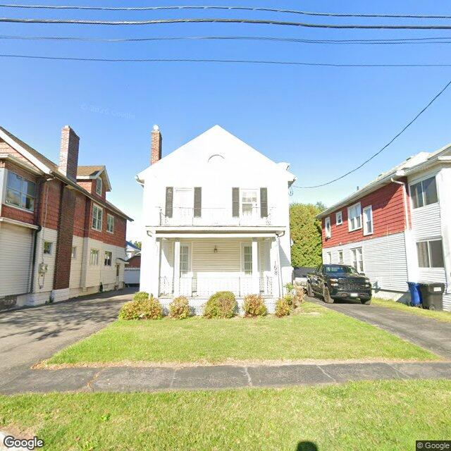

Property entry
158 Kenwood Ave
Published 2026-09-13T18:03:04+00:00
Parcel key: 004-13-370

Faded house number · high confidenceAI image read
A two-story single-family residence with white siding, a front porch, and a small second-story balcony is visible, appearing generally maintained.
Property type guess: single_family
Visible conditions
- The property features a two-story structure with white horizontal siding.
- A gable roof is visible, with a brick chimney extending from it.
- A front porch with white columns and a railing is present at the main entry.
- Second-story windows are equipped with dark shutters, and a small balcony railing is visible.
- A paved driveway runs along the right side of the property.
- The front yard consists of a grass lawn and foundation plantings along the front of the house.
- A house number '158' is visible on the right side of the front porch, near the railing, but appears somewhat faded or partially obscured.
Condition scores
- Roof
- fair
- Siding Or Facade
- fair
- Windows Doors
- fair
- Porch Or Entry
- fair
- Yard Or Lot
- good
- Trash Debris
- none_visible
- Vegetation Overgrowth
- none_visible
Visible flags
- Boarded Windows Or Doors
- no
- Fire Damage Visible
- no
- Structural Damage Visible
- no
- Vacancy Signs Visible
- no
- Active Construction Visible
- no
Possible image-only flags
- The house number '158' appears faded or partially obscured on the front porch.
AI review boxes
- Faded house number: The house number '158' is visible but appears faded or partially obscured on the porch.
Review reasons
- Possible image-only issue
Image quality
- Available
- True
- Bytes
- 82583
- Needs Rerun
- False
['Image date is from 2022.']
ACS tract context
Census Tract 3; Onondaga County; New York
- Total population
- 1606
- Median household income
- 74716
- Poverty rate
- 18.7
- Housing units
- 708
- Vacancy rate
- 6.6
- Renter-occupied share
- 64.3
- Median gross rent
- 110100
OpenStreetMap nearby
meter search radius
OpenStreetMap lookup failed: HTTP Error 406: Not Acceptable
Vacant properties 0
No matching records found in this feed.
Rental registry 0
No matching records found in this feed.
Code violations 0
No matching records found in this feed.
Unfit properties 0
No matching records found in this feed.